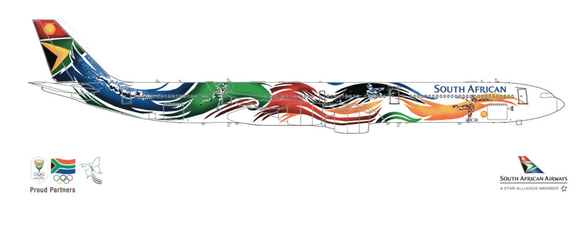
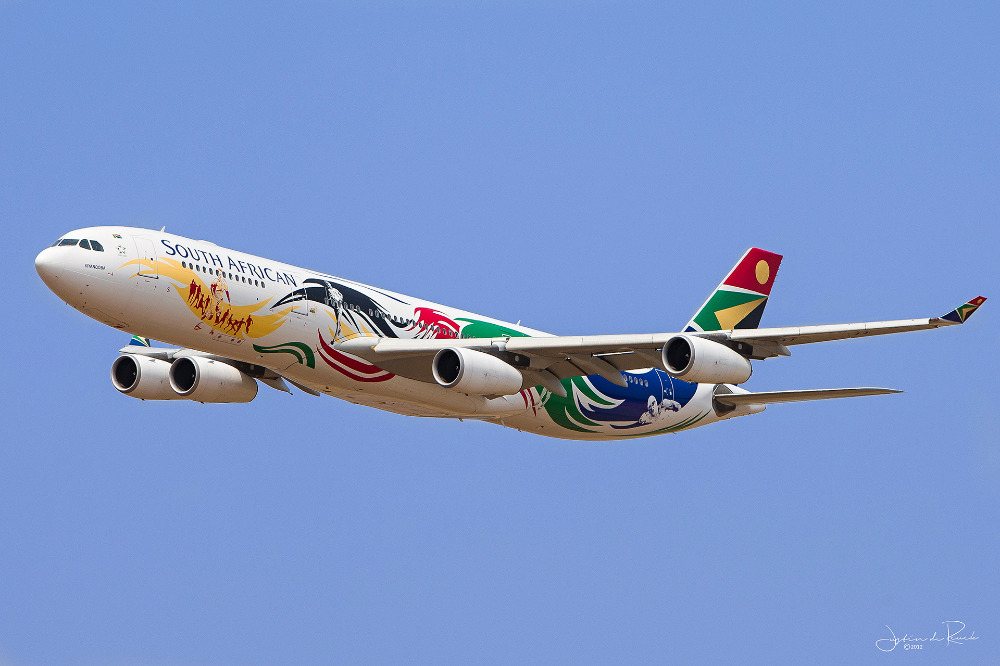
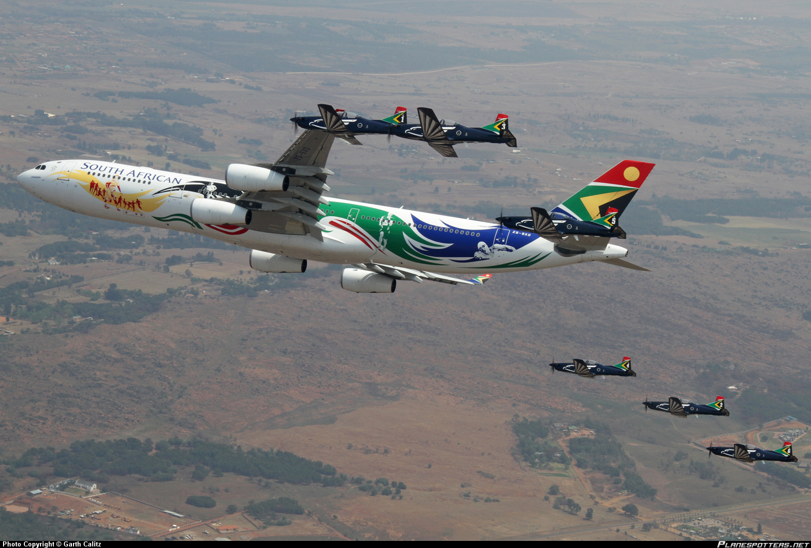
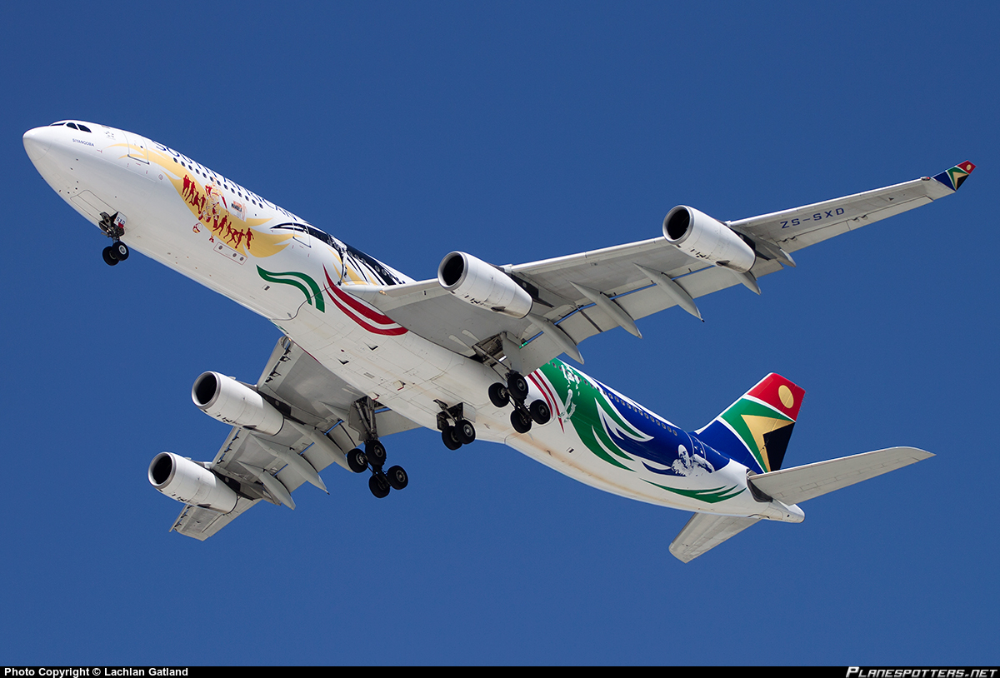

South African Airways Olympic Plane
Graphic design for an airplane livery
About the project
When the South African team left to the London Olympics in 2012, they traveled in an airbus decorated with my design.
Project date
2012

My original submitted design
I wanted to create a design that was dynamic and organic, showing energy and movement. The wave shapes were created with brush and ink by hand, then painted and retraced digitally. The design was dubbed “Siyanqoba”. Aside from a trip to the Olympic games, I was awarded a bursary to study at the Stellenbosch Academy of Design and Photography as a result of this achievement.

Photo by Justin de Reuck

Photo by Garth Calitz

Photo by Lachian Gatland